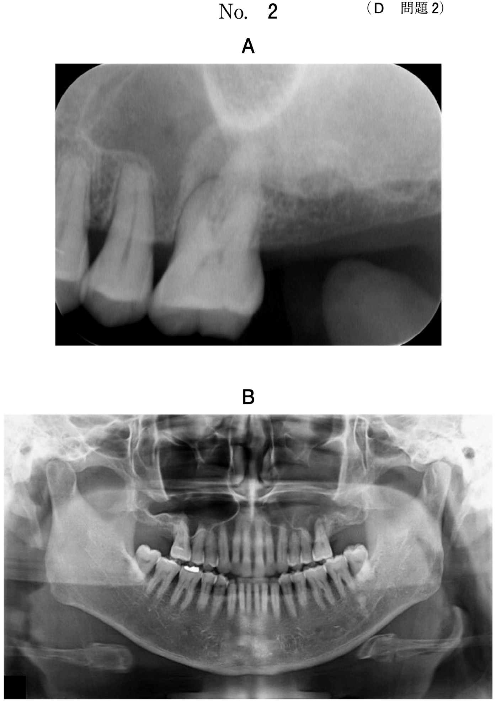
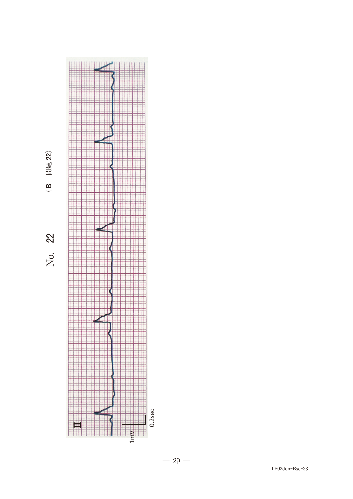

幼若永久歯の歯内療法
幼若永久歯の特徴
- 根尖未完成（ラッパ状に開大）
- 歯髄腔が広く、歯髄の生活力が旺盛
- 根管壁が薄い
アペキソゲネーシスとアペキシフィケーション（頻出）
| アペキソゲネーシス | アペキシフィケーション | |
|---|---|---|
| 歯髄 | 生活歯髄 | 壊死歯髄 |
| 根尖病変 | なし | あり |
| 処置 | 生活断髄 | 感染根管治療 |
| 根尖形成 | 歯根の正常な発育 | 硬組織による閉鎖 |
| 使用薬剤 | 水酸化カルシウム | 水酸化カルシウム |
アペキソゲネーシス（Apexogenesis）
- 歯髄が生活している根未完成歯に適用
- 生活歯髄切断により根部歯髄を保存
- 歯根の正常な発育・完成を期待
- 根尖閉鎖後は最終修復（CR修復など）
アペキシフィケーション（Apexification）
- 歯髄が壊死した根未完成歯に適用
- 根尖病変を有する根未完成歯
- 感染根管治療後、水酸化カルシウムを根管貼薬
- 硬組織（セメント質様組織）による根尖閉鎖を期待
- 根尖閉鎖後はガッタパーチャによる根管充填
中心結節破折
下顎小臼歯に好発。中心結節が破折すると露髄し、歯髄炎・歯髄壊死に至る。
- 歯髄が生活 → アペキソゲネーシス（生活断髄）
- 歯髄壊死・根尖病変あり → アペキシフィケーション
過去問
根尖病変を有する根未完成歯に適用されるのはどれか。1つ選べ。
b 生活断髄
c 暫間的間接覆髄
d アペキソゲネーシス
e アペキシフィケーション
【解説】根尖病変を有する根未完成歯にはアペキシフィケーションを適用。歯髄が壊死して根尖病変がある場合はアペキシフィケーション、歯髄が生活している場合はアペキソゲネーシス。
10歳の男児。下顎左側第二小臼歯の咬合痛を主訴として来院した。1か月前から同部に違和感を自覚していたが1週前から食事の際に咬合痛があるという。┌5の動揺度は1度、自発痛はないが打診痛がある。初診時の口腔内写真（別冊No.6A）とエックス線写真（別冊No.6B）を別に示す。適切な対応はどれか。1つ選べ。


b 咬合調整
c 直接覆髄
d 抜 髄
e アペキシフィケーション
【解説】中心結節破折後、打診痛あり・X線で根尖病変あり・根未完成 → 歯髄壊死による根尖性歯周炎。アペキシフィケーションの適応。
10歳の女児。経過観察のために来院した。1年前に上顎左側第一小臼歯の中心結節破折による一部性歯髄炎と診断され、水酸化カルシウム製剤による生活歯髄切断法を実施され、現在まで経過観察を行っている。症状について特記すべきことはない。初診時（1年前）、経過観察時（処置後6か月）及び現在のエックス線写真（別冊No.11）を別に示す。現在の治療方針として適切なのはどれか。1つ選べ。

b 抜 歯
c 低位断髄
d 感染根管治療
e コンポジットレジン修復
【解説】アペキソゲネーシス（生活断髄）後、根尖が閉鎖し症状がなければ最終修復（CR修復）を行う。X線で根尖閉鎖が確認できれば歯内療法は終了。
13歳の女子。根管治療後の経過観察のために受診した。3年前に下顎右側第二小臼歯の中心結節破折による根尖性歯周炎に対する治療を行った。治療後、不快事項はなく、第二小臼歯は安定した状態である。3年前の口腔内写真（別冊No.33A）と3年前と現在のエックス線写真（別冊No.33B）を別に示す。適切な対応はどれか。1つ選べ。


b 水酸化カルシウム製剤の根管貼薬
c ガッタパーチャポイントによる根管充塡
d 歯根端切除
e 抜 歯
【解説】アペキシフィケーション後、根尖が硬組織で閉鎖されたらガッタパーチャポイントによる根管充填を行う。X線で根尖閉鎖・根尖病変消失が確認できれば最終的な根管充填へ。